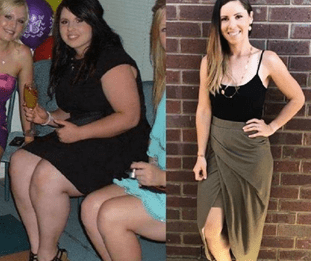
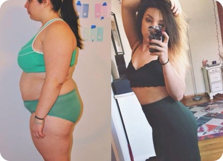
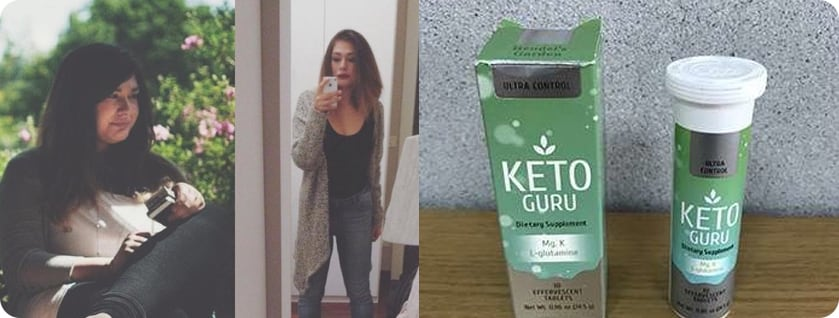

Диеты и спорт - самые неэффективные методы для похудения!
Считается, что занятия спортом и диета быстро сжигают жир.
Специалисты доказали, что это самые
неэффективные
методы
- Недостатки диет:
- Чувство голода, еда по часам
- Отказ от любимых продуктов и блюд
- Вероятность срыва 95%
- После завершения диеты вес возвращается
- Сжигается мышечная масса, а не жир
- Недостатки спорта:
- Посещение спортзала 3-4 раза в неделю
- Противопоказания определенным видам нагрузок при избыточной массе тела
- Большая нагрузка на суставы и мышцы
- Низкая эффективность - результаты заметны через 4-6 недель


Программа безопасного снижения веса по принципу кето-диеты
Попробовать сейчас-
Эффективно
Сброшенные килограммы не возвращаются
-
Быстро
Первые результаты уже через несколько дней
-
Безопасно
Без вреда для здоровья, без срывов
лучшая альтернатива для борьбы с лишним весом!
-
01
Разгоняет метаболизм и вводит в организм в состояние кетоза на 3-4 день, при этом сводя на “нет” все симптомы кето-гриппа. Лишний вес начинает уходить на 5-й день.
-
02
При употреблении Keto Guru не обязательно соблюдать пищевые правила и истязать себя физическими нагрузками. Похудение начинается в любом случае.
-
03
Работает по принципу кето-диеты. Шипучие таблетки увеличивают концентрацию кетонов в крови, метаболизм переходит в состояние кетоза, исчезают жировые отложения в проблемных зонах.
Состав

-
Магний
Снимает раздражительность, предотвращает развитие депрессии, улучшает общее состояние.
-
Аминомасляная кислота
Повышает концентрацию внимания, улучшает качество сна, способствует расслаблению
-
L-глутамин
Снижает усталость, повышает выносливость, обеспечивает похудение за счет сжигания жировых отложений, а не мышечной массы.
-
Витамины группы B
Поддерживают работу всех систем и органов, снижают уровень холестерина, улучшают репродуктивную функцию.
-
Калий
Снижает риск развития кето-гриппа при соблюдении диеты, нормализует кровяное давление, устраняет слабость мышц.
Keto Guru разделил их жизнь на “ДО” и “ПОСЛЕ
-
Anna Stepanova

111 отметок “Нравится”
Anna Однажды я случайно наткнулась в инсте на блог одной прекрасной девушки, которая похудела примерно на 70 кг на средстве Keto Guru, которое полностью заменило ей кето-диету. Поспрашивала я об этом средстве, почитала.... Инфы в интернете масса, но нужно уметь отделять ложь от правды. В этом мне помогли некоторые знающие гуру, которых я также нашла в инсте. За месяц я скинула 10 кг! Причем не чувствуя голода и иногда даже переедая. Я не отказываю себе в удовольствиях и при этом полностью забила на спорт.(СМАЙЛИК) Мои результаты с Keto Guru: - я похудела на 10 кг. Сейчас я вешу 68 кг. Этот вес у меня был года 4 назад последний раз. Впереди еще 8 кг! - я стала лучше себя чувствовать. - я перестала быть злой и агрессивной. - улучшилось состояние кожи. Keto Guru - отличный способ похудеть для тех, кто не хочет ничего менять в своей жизни, для таких как я!
#Keto Guru#grow thin without limits
7 месяцев назад
-
Inna Semenova
342 отметок “Нравится”
Inna После вторых родов я поправилась на 20 кг. Пока кормила грудью, вес не уходил. Перестала кормить и стала искать диету для похудения. Выбрала себе кето-диету, и осталась разочарована. Трижды я срывалась, набирала новые килограммы, чувствовала себя ужасно, была нервной, срывалась на детях и муже. После третьего срыва я поняла, что это не мое, и стала искать альтернативу. Ее я нашла в облике Keto Guru. Отзывы были очень положительные и вселяли уверенность в успех. Заказала, стала принимать строго по инструкции, через 2 недели сбросила 8 кг,(СМАЙЛИК) а полностью вес ушел за один курс приема! Очень довольна результатом, только посмотрите на мои фотки до и после - это же небо и земля. Муж теперь меня на руках носит, гордится тем что я так быстро смогла в форму прийти. Вот уже полгода как завершила свою программу похудения, но для профилактики раз в несколько месяцев все же пропиваю курс шипучих таблеток.
#KetoGuru#forever
7 месяцев назад
-
Irina Mavrina
342 отметок “Нравится”
Irina С возрастом стала поправляться. За 5 лет набрала 40 кг. Муж ушел, сказал, что такая жирная корова ему на фиг не сдалась. В тот момент я поняла, что надо что-то менять в своей жизни. Спортом я никогда не интересовалась, хотя на работе у меня был неограниченный и бесплатный доступ в спортзал и бассейн. Но с массой тела за 100 кг сложно заниматься. Пыталась питаться правильно - меня хватало на 3 дня и я оказывалась в фастфуде с ведром крылышек и картошкой-фри. Заказывала себе сбалансированное питание, которое доставляют ежедневно. Но блюда, которые надо растягивать на 4-5 приемов пищи, я съедала на завтрак, а потом догонялась вредными продуктами. Однажды я встретила знакомую, которая сильно похудела после вторых родов. Она рассказала мне про Keto Guru. Я заказала себе шипучие растворимые таблетки. Стала пить по инструкции - 1 раз в день. В общем скажу так - согнать лишний вес я смогла за 2 курса. Спустя 2 месяца я остаюсь такой же красивой и стройной, ни в чем себя не ограничиваю. Единственное, что я изменила - стала посещать бассейн, люблю поплавать. К тому же если раньше я ужасно стеснялась своего тела, то теперь делаю это с удовольствием и никакой неловкости от своего тела в купальнике я не испытываю.
#KetoGuru
7 месяцев назад
Эффективность
Специалист раскрывает секрет эффективности
Мои пациентки часто обращаются ко мне с вопросом - как быстро сбросить 15-20 кг? Раньше я бы ответила - никак. Но теперь есть Keto Guru - всего 1 таблетка на стакан воды утром заставит метаболизм работать на благо вашей фигуры. Обычно при быстром похудении страдают все органы, обостряются и развиваются хронические заболевания, ухудшается состояние волос и кожи. С шипучими таблетками Keto Guru у вас не будет подобных проблем. Благодаря высокому содержанию витаминов и микроэлементов в таблетках улучшится общее состояние организма и повысится иммунитет.
Альбина Ступина, диетолог, специалист по интуитивному питанию
Женщины, которые пропили курс Keto Guru, отмечают такие эффекты:
В исследовании приняли участие 18 965 женщин с избыточной массой 5-25 кг. После отказа от приема Keto Guru вес держится на достигнутой отметке и не возвращается. Для закрепления результата и очищения организма нужно пропивать курс каждые 6 месяцев.
-
81% стабильный вес после завершения программы
-
98% снижение веса и аппетита
-
82% улучшение состония кожи, волос и ногтей
-
87% подтягивание кожи, уменьшение целлюлита
-
94% улучшение состояния организма
№1 среди средств для похудения в интернете
749
Комментарии: 5
- Нравится
- Комментарий
- Поделиться
-
Анна Иванова Пью Keto Guru, почти закончила курс. Похудела на 12 кг, я в полном восторге!
Нравится Ответить 2 ч. -
Инна Абрамова Да какие там к черту диеты!!! Я уже попробовала эти шипучие таблетки, оценила их эффективность - за месяц сбросила почти 17 кг. Как думаете, буду ли я себя истязать диетами и спортом? Ну, конечно, нет!
Нравится Ответить 1 ч. -
Диана Рыжова Стала пить Keto Guru - похудела на три размера, стала более уверенной в себе, мужики теперь шеи сворачивают вслед мне:) Результат очевиден!
Нравится Ответить 45 мин. -
Елена Прохорова Тоже пила Keto Guru, в результате за один курс похудела на 9 кг. Очень рекомендую.
Нравится Ответить 37 мин. -

Светлана Голубева Действительно похудела, да еще и кожа подтянулась, теперь я выгляжу настоящей красоткой без грамма лишнего веса.
Нравится Ответить 15 мин. -
Катерина Пропила курс Keto Guru. Пробовала раньше многие средства. Это понравилось больше всего. Он натуральный, да и к тому же помимо самого похудения убирает дряблость кожи, даже целлюлит после него практически исчез. Ну и сам результат в минус 8,5 кг меня тоже впечатлил. Для натурального средства, которое никаких побочных не дает - это результат более чем крутой!
 Нравится Ответить 13 мин. -
Виктория Я пью Keto Guru, принимаю его по совету диетолога. До этого с диет срывалась уже 4 раза. Притом из всего многообразия препаратов Keto Guru самый эффективный и безопасный. Я реально уже 3-ю неделю как начала худеть, аппетит снизился замечательно, порции уменьшились прямо на глазах и самое главное, что мне хватает того, что кладу в тарелку.
Нравится Ответить 7 мин. -
Оксана По утрам пью таблетки Keto Guru. Препарат полностью натуральный. Эффект постепенный, но видимый, подавляет чувство голода. Жалоб на побочный эффекты у меня нет. Могу рекомендовать.
Нравится Ответить 5 мин. -
Алина Плюсик. Понравилось худеть с Keto Guru, кушать не хочется, вечерами уже не срывалась на еду в таких количествах, как раньше. По составу тоже все устроило, все ингредиенты натуральные. Цена доступная. Похудела на 10 кг.
 Нравится Ответить 2 мин.
Как мы работаем
-
Заполните форму заказа
-
Ждите звонка оператора для подтверждения вашего заказа
-
ПРЕДОПЛАТА НЕ НУЖНА Оплатить заказ при доставке
Мощный удар по лишнему весу
Не оставляй жиру ни единого шанса!